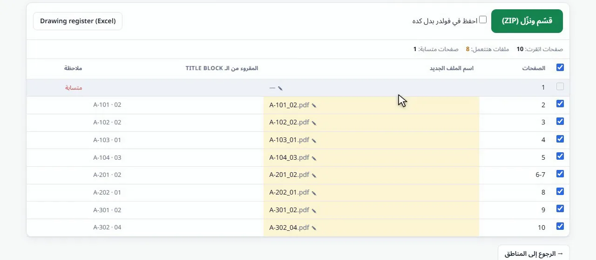

طريقة تقسيم ملف لوحات PDF إلى ملف لكل لوحة باسم رقمها
حوّل ملف PDF واحداً فيه 50 أو 500 لوحة إلى ملف PDF لكل لوحة، وكل ملف باسم رقم اللوحة والمراجعة المقروءين من جدول العنوان الخاص بها.
ملفاتك بتفضل على جهازك. مفيش أي حاجة بتترفع.
الإجابة باختصار
افتح أداة تقسيم وتسمية PDF، واختر الملف المجمّع، وارسم مربعاً حول رقم اللوحة على لوحة واحدة (وحول المراجعة إذا أردتها في الاسم)، وراجع قائمة الأسماء ثم اضغط "قسّم ونزّل". تحصل على ملف ZIP فيه ملف PDF لكل لوحة باسم مثل A-101_02.pdf.
لماذا تقسيم ملف اللوحات يدوياً مشكلة
كثيراً ما يرسل الاستشاري أو المقاول التسليم كله في ملف PDF واحد. وقبل أن تحفظه أو تربطه بقائمة اللوحات أو ترسل لوحات منفردة للموقع، على شخص ما أن يقسّمه صفحة صفحة ويكتب اسم كل ملف.
أدوات تقسيم PDF العادية تعطيك page_1.pdf و page_2.pdf وهكذا. ومع 120 لوحة، هذا يوم عمل كامل من فتح كل صفحة وقراءة جدول العنوان وتغيير اسم الملف، مع احتمال حقيقي لكتابة رقم خطأ.
خطوة بخطوة
اختار ملف الـ PDF المجمّع
افتح الأداة واضغط "اختر PDF"، أو اسحب الملف إلى الصفحة. تعدّ الأداة الصفحات وتعرض أول لوحة.
حدّد رقم اللوحة
على لوحة واحدة، اسحب مربعاً حول رقم اللوحة في جدول العنوان. وأضف مربعاً ثانياً حول المراجعة أو العنوان إذا أردتهما في اسم الملف أيضاً.
كوّن اسم الملف
اضغط على المربعات وعلى فاصل لتكوين الاسم، مثلاً {1}_{2} تعطي A-101_02.pdf. والصفحات المتتالية التي لها نفس الرقم يمكن أن تُجمع في ملف واحد، ويمكن استبعاد الغلاف أو الفهرس.
راجع كل الأسماء
تُقرأ كل صفحة وتظهر في القائمة مع اسم الملف الجديد وما قُرئ من جدول العنوان. اضغط على أي اسم لتصحيحه قبل التقسيم.
قسّم ونزّل
اضغط "قسّم ونزّل (ZIP)"، أو "احفظ في فولدر بدل كده". وفعّل خيار قائمة اللوحات لتحصل على قائمة Excel باللوحات مع الملفات.

ما الذي تتعامل معه الأداة
- لوحات بتصميم مختلف لجدول العنوان: المربعات تتبع العناوين المكتوبة بجانبها.
- اللوحات الممسوحة ضوئياً: يقرأ الـ OCR المربعات عندما لا يوجد نص في ملف PDF.
- اللوحات الممتدة على صفحتين، تبقى معاً في ملف واحد.
- لوحتان بنفس الرقم، تأخذان (2) و (3) بدلاً من أن تكتب إحداهما فوق الأخرى.
بعد التقسيم
ملف ZIP فيه ملف PDF لكل لوحة، وإذا فعّلت الخيار، قائمة لوحات في Excel فيها الصفحة واسم الملف وما قُرئ. احفظ اللوحات مباشرة في فولدرات المشروع، أو أرسل لوحات منفردة بدون إرسال الملف كله.
قسّم ملف اللوحات الآن
مجاني، يعمل داخل متصفحك، ولوحاتك لا تخرج من جهازك أبداً.
افتح أداة تقسيم وتسمية PDF ←أسئلة شائعة
كيف أقسّم ملف PDF إلى صفحات منفصلة باسم رقم اللوحة؟
افتح أداة تقسيم وتسمية PDF، وارسم مربعاً حول رقم اللوحة على لوحة واحدة، واضغط "قسّم ونزّل". كل صفحة تُحفظ كملف PDF مستقل باسم رقمها.
هل تقرأ اللوحات الممسوحة ضوئياً؟
نعم. عندما لا يوجد نص في الصفحة، يقرأ الـ OCR المربعات بالإنجليزية أو العربية أو الاثنتين.
هل يُرفع ملف اللوحات؟
لا. متصفحك هو الذي يقرأ ملف PDF على جهازك، ولا يُرسل أي شيء لأي سيرفر.
ماذا لو كانت اللوحة على صفحتين؟
فعّل خيار جمع الصفحات المتتالية التي لها نفس الاسم في ملف واحد، فتُحفظان معاً.
هل يمكن الحصول على قائمة لوحات أيضاً؟
نعم. فعّل خيار إضافة قائمة لوحات (Excel) مع الملفات، فتأتي قائمة Excel داخل ملف ZIP.